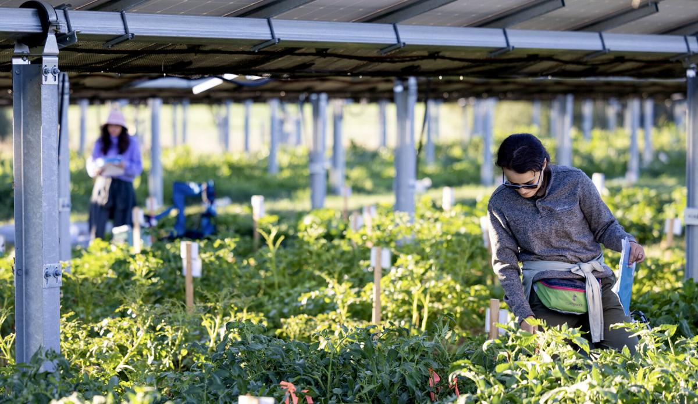
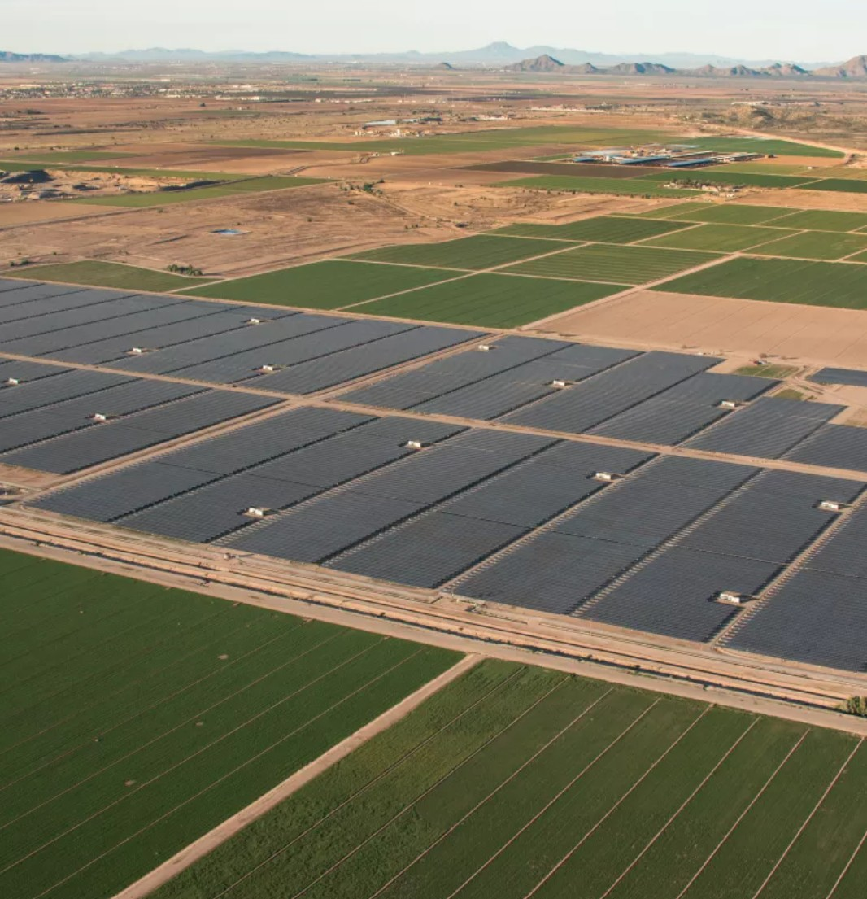

Semi-arid Lab for Scaling Agrivoltaics
Our lab researches and implements agrivoltaic systems to create resilient food, energy, and water solutions in arid regions. We scale this work from local test plots to global partnerships, building a data-driven roadmap for a sustainable future.
Major Challenges Across Food, Energy & Water
"Climate Change Threatens Wine, and a Way of Life... Extreme weather has ruined grape crops... 'If it continues like this, how will we continue? I really don't know,' said one winegrower."
"Empty canals, dead cotton fields: Arizona farmers are getting slammed by water cuts in the West."
"Low on Water, California Farmers Turn to Solar Farming... a state law now requires water regulators to figure out how to balance their accounts so that groundwater levels stop dropping."
Unfortunately, we've often been "siloed" in the way we think about solutions, pitting land use for energy against land use for food.
We are moving beyond siloed solutions by asking a simple question: What if we produce our food under solar panels?
Agrivoltaics Radically Increases Food Production
Spinach Yield Increase
A staggering increase in production, demonstrating how the shade and moderated climate under panels create ideal growing conditions for delicate leafy greens.
Cowpea Yield Increase
This vital, drought-tolerant crop sees its yield more than double, improving food security with a protein-rich staple food.
Zucchini Yield Increase
Nearly triple the yield shows that agrivoltaics benefits a wide variety of common garden vegetables, boosting local food supplies.
And it achieves this using less water.
The shade from the panels reduces soil and plant temperatures, dramatically decreasing water evaporation and plant stress. Under drought-like conditions with half-irrigation, agrivoltaics still produces a greater yield than fully irrigated crops in full sun, making food production possible where it otherwise might not be.
Research in Agrivoltaics Systems
The Plant-Panel Symbiosis
The partial shade of solar panels creates a unique growing environment for crops. How does the AV environment affect crop physiology, water use, phenology and yield?
From Kilowatts to Megawatts
Taking proven benefits from test plots to utility-scale requires robust engineering and economic models. We analyze system designs and financial viability to create a clear roadmap for profitable agrivoltaic projects.
Adapting to Diverse Contexts
An agrivoltaic solution for Arizona's desert differs from one for Colorado's pastures. Our research spans multiple climates and crop types to develop adaptable, resilient models that work worldwide.



A climate expert takes you inside the research
Dr. Greg Barron-Gafford, Lead Investigator
As a Professor at the University of Arizona, Dr. Barron-Gafford leads our multi-disciplinary team exploring the food-energy-water nexus, demonstrating how agrivoltaics can meet our growing need for renewable energy and sustainable agriculture.
Developing the Next Generation of Agrivoltaics Leaders
Our educational focus builds capacity at all levels, from K-12 engagement to university-level research and professional training.
School Garden Programs
Bringing hands-on agrivoltaics learning to K-12 students, inspiring future scientists and innovators.
Interdisciplinary Opportunities
Fostering collaboration across science, engineering, and policy for graduate and undergraduate students.
Global School of Agrivoltaics
Training workshops and resources for farmers, developers, and policymakers to implement successful projects.
Our Global SALSA Learning Labs
View All SitesFrom the drylands of Arizona to equatorial Kenya, our research spans diverse climates to create adaptable, resilient agrivoltaic models.

Field & Academic Press
See AllWe Are Proud to be Partners
Complex challenges require great partners with diverse backgrounds. Our team bridges the biophysical and social sciences, and works across food, water, and energy disciplines.
Let’s shape the future of energy & agriculture.
Our research provides data-driven models that developers, farmers and policymakers can trust.
Contact Us